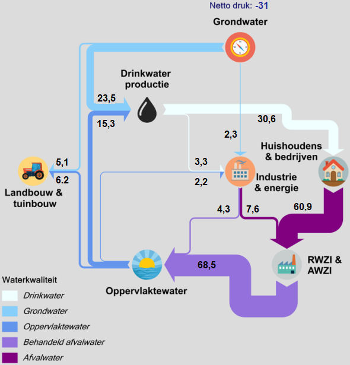

Kaarten met waterverdeling in Nederland bij zeer lage afvoeren en lage tot normale afvoeren
Achtergrond van de kaarten
De kaarten tonen indicatief de verdeling van water en de grote onttrekkingen aan oppervlaktewater binnen Nederland. Het gaat om oppervlaktewater en de volgende af- en aanvoergegevens:
• uitwisseling tussen het hoofdwatersysteem en de regionale wateren;
• de grotere doorvoerlocaties binnen het regionale watersysteem;
• onttrekkingen door andere (grotere) gebruikers uit het hoofdwatersysteem;
• overige relevante locaties.
Er zijn kaarten voor twee omstandigheden:
• Rijn ~700 m3/s bij Lobith, een situatie zoals op 20 augustus 2022. Een dergelijke afvoer kwam sinds 1901 niet eerder voor in augustus, en de laatste 50 jaar alleen in het najaar van 2018;
• Maas ~30 m3/s bij Sint Pieter, een situatie zoals op 16 augustus 2022. Een dergelijke afvoer kwam sinds 1991 meerdere keren voor en is minder uitzonderlijk dan de afvoer van de Rijn in augustus 2022.
• Rijn ~1300 m3/s bij Lobith, een situatie zoals op 16 juni 2022;
• Maas ~60 m3/s bij Sint Pieter, een situatie zoals op 16 juni 2022.
Voor informatie over het verloop van het droogteseizoen 2022, inclusief de genomen maatregelen en de gevolgen van watertekorten en maatregelen voor gebruikers, zie de WMCN-LCW terugblik 2022 (link).
De kaarten tonen indicatieve waarden, zoveel mogelijk gebaseerd op een reële situatie zoals op de genoemde data. De kaarten zijn voor het grootste deel gebaseerd op informatie van de waterbeheerders. Belangrijk hierbij is dat:
• Waterverdeling situationeel wordt uitgevoerd. Dat wil zeggen: op basis van de behoeften, omstandigheden en mogelijkheden op het moment. Elke volgende situatie met vergelijkbare afvoeren zal op diverse locaties een andere verdeling hebben;
• De gegevens op deze kaart daarom indicatief en informerend zijn en geen handvat voor volgende soortgelijke situaties;
• De getoonde waarden onzekerheden hebben: ze komen niet altijd van metingen, maar ook van inschattingen of uit modelberekeningen. Afvoermetingen hebben ook onzekerheden;
• In sommige gebieden zijn veel inlaatpunten van waterschappen. Daar zijn geaggregeerde waarden weergegeven. Dit geldt met name voor de Zuid-Willemsvaart, het Wilhelminakanaal, de Twentekanalen, de westkant van het IJsselmeer en Markermeer en de Hollandse Delta;
• Inname voor koelwater is niet opgenomen.
Afvoeren zijn weergegeven in kubieke meters per seconde (daggemiddeld)
Hoge kwaliteit kaarten en de basisgegevens voor de kubieke meters per locaties zijn te vinden op de Iplo website.
Deze kaarten zijn gemaakt in opdracht van het ministerie van Infrastructuur en Waterstaat (DG Rijkswaterstaat en DG Water en Bodem) en de Unie van Waterschappen door Cartonext.
Februari 2024

De verdeling van grond- en oppervlaktewater naar drinkwater en landbouw volgens KWR 2020.